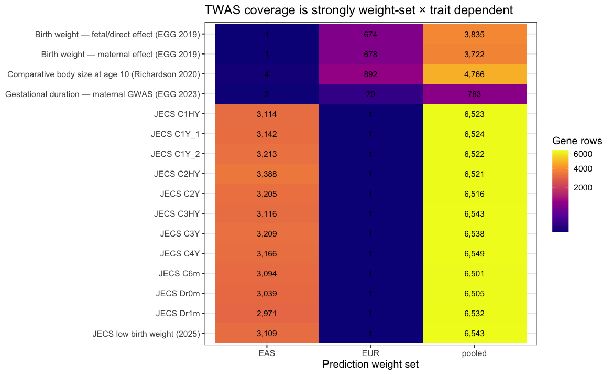
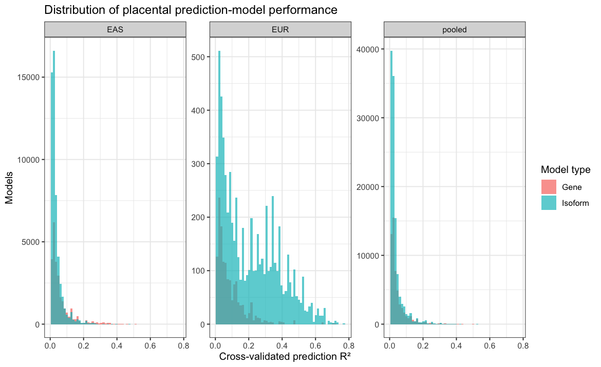
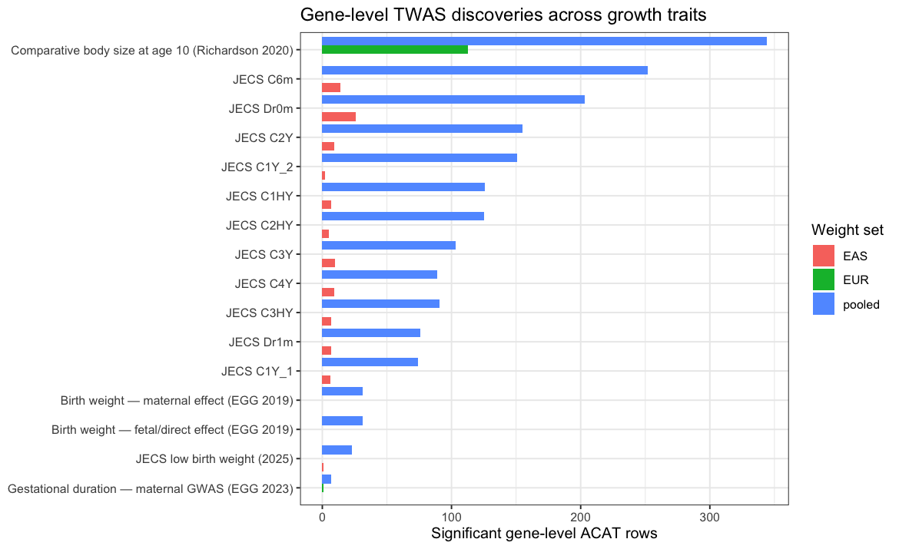
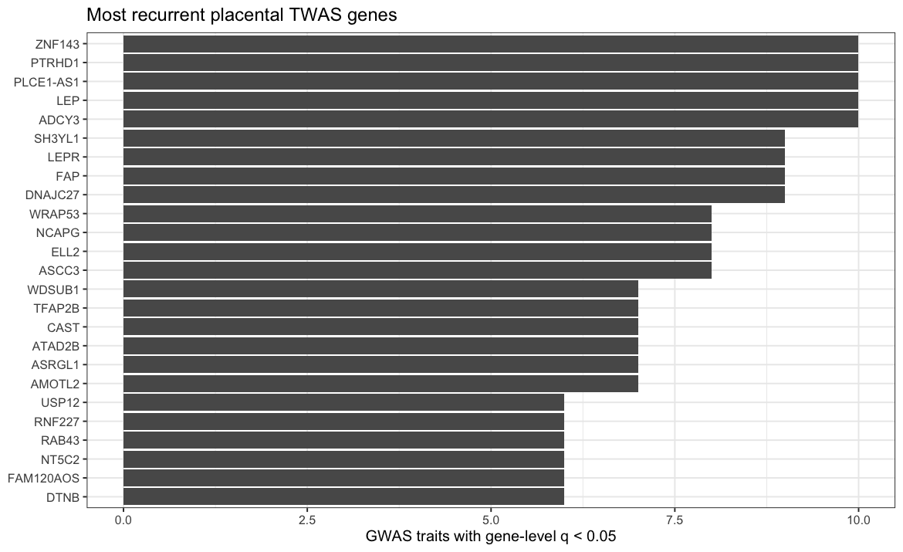
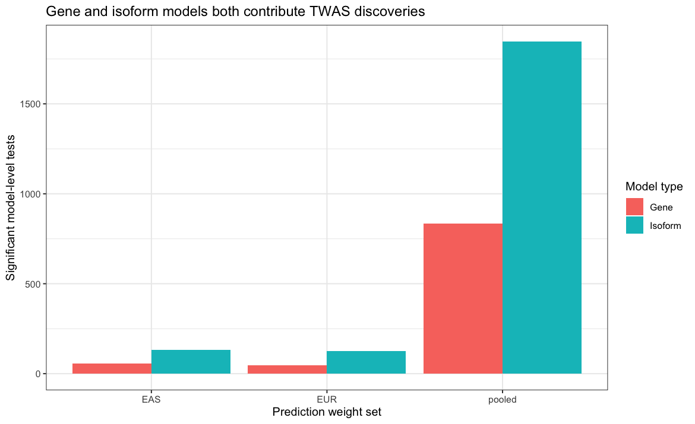

7 Transcriptome-wide association study
7.1 Executive summary
This report summarizes placental transcriptome-wide association testing performed with FUSION prediction weights at both gene and isoform resolution. The supplied aggregate contains 258,124 model-level tests representing 8,075 primary Ensembl genes across 16 GWAS traits, together with 131,523 gene-level ACAT aggregation rows.
Headline result. At the supplied false-discovery threshold, 3,041 model-level associations have TWAS.Q < 0.05, and 2,098 gene × trait × weight-set rows have acat_q < 0.05. The gene-level set corresponds to 2,032 distinct gene–trait combinations before collapsing weight sets.
Among significant TWAS gene–trait pairs, 31 are also represented by a called SuSiE-coloc gene–trait pair and 12 by a mixed xQTL–GWAS colocBoost event; 40 have support from at least one colocalization framework.
The recurrent TWAS landscape contains both well-established body-weight genes—most prominently ADCY3, LEP, and LEPR—and placenta-centered candidates such as ELP5, CLDN7, CTDNEP1, SLC38A1, FAP, PLCE1-AS1, and SH3YL1. TWAS should be interpreted as evidence that the genetically predicted placental molecular phenotype is associated with the GWAS trait; it is not by itself proof of mediation or of a unique causal gene.
7.2 Methods
7.2.1 FUSION model-level tests
FUSION predicts the genetically regulated component of a molecular
phenotype from cis-genetic weights and tests that predicted component
against GWAS summary statistics. Here the ID field includes both gene
models and long-read isoform models. A model is classified as
isoform-level when its identifier contains __; otherwise it is
classified as a gene-level model.
The report treats the supplied TWAS.P and TWAS.Q values as
authoritative. Because a small number of extremely significant p-values
are stored as numeric zero, all plotting code floors p-values at
.Machine$double.xmin before -log10 transformation; the underlying
result tables are not altered.
7.2.2 Gene-level ACAT aggregation
twas_gene_results.tsv.gz combines the available gene and isoform model
p-values for each gene × trait × weight-set cell with ACAT. acat_q is
used for headline gene-level discovery. The ACAT statistic is
direction-free; when this report displays a direction it explicitly
labels it as the lead model TWAS Z, not a gene-level ACAT effect
direction.
7.2.3 Prediction weight sets
weight_set denotes the placental prediction-weight panel (EAS,
EUR, or pooled). It should not be read as a balanced replication
design. The external GWAS resources available to each ancestry differ
substantially, so raw EAS-versus-EUR hit counts are not directly
comparable. Pooled weights provide the broadest trait coverage.
7.3 Input landscape and QC
7.3.1 Testing coverage
| weight_set | trait_id | trait_label | gene_rows | significant_genes |
|---|---|---|---|---|
| EAS | childbodysize10_richardson_2020 | Comparative body size at age 10 (Richardson 2020) | 4 | 0 |
| EAS | egg_bw_fetal_2019 | Birth weight — fetal/direct effect (EGG 2019) | 1 | 0 |
| EAS | egg_bw_maternal_2019 | Birth weight — maternal effect (EGG 2019) | 1 | 0 |
| EAS | egg_ga_maternal_2023 | Gestational duration — maternal GWAS (EGG 2023) | 2 | 0 |
| EAS | jecs_childhood_bmi_2025_c1hy | JECS childhood BMI — C1HY | 3114 | 7 |
| EAS | jecs_childhood_bmi_2025_c1y_1 | JECS childhood BMI — C1Y_1 | 3142 | 6 |
| EAS | jecs_childhood_bmi_2025_c1y_2 | JECS childhood BMI — C1Y_2 | 3213 | 2 |
| EAS | jecs_childhood_bmi_2025_c2hy | JECS childhood BMI — C2HY | 3388 | 5 |
| EAS | jecs_childhood_bmi_2025_c2y | JECS childhood BMI — C2Y | 3205 | 9 |
| EAS | jecs_childhood_bmi_2025_c3hy | JECS childhood BMI — C3HY | 3116 | 7 |
| EAS | jecs_childhood_bmi_2025_c3y | JECS childhood BMI — C3Y | 3209 | 10 |
| EAS | jecs_childhood_bmi_2025_c4y | JECS childhood BMI — C4Y | 3166 | 9 |
| EAS | jecs_childhood_bmi_2025_c6m | JECS childhood BMI — C6m | 3094 | 14 |
| EAS | jecs_childhood_bmi_2025_dr0m | JECS childhood BMI — Dr0m | 3039 | 26 |
| EAS | jecs_childhood_bmi_2025_dr1m | JECS childhood BMI — Dr1m | 2971 | 7 |
| EAS | jecs_low_birth_weight_2025 | JECS low birth weight (2025) | 3109 | 1 |
| EUR | childbodysize10_richardson_2020 | Comparative body size at age 10 (Richardson 2020) | 892 | 113 |
| EUR | egg_bw_fetal_2019 | Birth weight — fetal/direct effect (EGG 2019) | 674 | 0 |
| EUR | egg_bw_maternal_2019 | Birth weight — maternal effect (EGG 2019) | 678 | 0 |
| EUR | egg_ga_maternal_2023 | Gestational duration — maternal GWAS (EGG 2023) | 70 | 1 |
| EUR | jecs_childhood_bmi_2025_c1hy | JECS childhood BMI — C1HY | 1 | 0 |
| EUR | jecs_childhood_bmi_2025_c1y_1 | JECS childhood BMI — C1Y_1 | 1 | 0 |
| EUR | jecs_childhood_bmi_2025_c1y_2 | JECS childhood BMI — C1Y_2 | 1 | 0 |
| EUR | jecs_childhood_bmi_2025_c2hy | JECS childhood BMI — C2HY | 1 | 0 |
| EUR | jecs_childhood_bmi_2025_c2y | JECS childhood BMI — C2Y | 1 | 0 |
| EUR | jecs_childhood_bmi_2025_c3hy | JECS childhood BMI — C3HY | 1 | 0 |
| EUR | jecs_childhood_bmi_2025_c3y | JECS childhood BMI — C3Y | 1 | 0 |
| EUR | jecs_childhood_bmi_2025_c4y | JECS childhood BMI — C4Y | 1 | 0 |
| EUR | jecs_childhood_bmi_2025_c6m | JECS childhood BMI — C6m | 1 | 0 |
| EUR | jecs_childhood_bmi_2025_dr0m | JECS childhood BMI — Dr0m | 1 | 0 |
| EUR | jecs_childhood_bmi_2025_dr1m | JECS childhood BMI — Dr1m | 1 | 0 |
| EUR | jecs_low_birth_weight_2025 | JECS low birth weight (2025) | 1 | 0 |
| pooled | childbodysize10_richardson_2020 | Comparative body size at age 10 (Richardson 2020) | 4766 | 344 |
| pooled | egg_bw_fetal_2019 | Birth weight — fetal/direct effect (EGG 2019) | 3835 | 31 |
| pooled | egg_bw_maternal_2019 | Birth weight — maternal effect (EGG 2019) | 3722 | 31 |
| pooled | egg_ga_maternal_2023 | Gestational duration — maternal GWAS (EGG 2023) | 783 | 7 |
| pooled | jecs_childhood_bmi_2025_c1hy | JECS childhood BMI — C1HY | 6523 | 126 |
| pooled | jecs_childhood_bmi_2025_c1y_1 | JECS childhood BMI — C1Y_1 | 6524 | 74 |
| pooled | jecs_childhood_bmi_2025_c1y_2 | JECS childhood BMI — C1Y_2 | 6522 | 151 |
| pooled | jecs_childhood_bmi_2025_c2hy | JECS childhood BMI — C2HY | 6521 | 125 |
| pooled | jecs_childhood_bmi_2025_c2y | JECS childhood BMI — C2Y | 6516 | 155 |
| pooled | jecs_childhood_bmi_2025_c3hy | JECS childhood BMI — C3HY | 6543 | 91 |
| pooled | jecs_childhood_bmi_2025_c3y | JECS childhood BMI — C3Y | 6538 | 103 |
| pooled | jecs_childhood_bmi_2025_c4y | JECS childhood BMI — C4Y | 6549 | 89 |
| pooled | jecs_childhood_bmi_2025_c6m | JECS childhood BMI — C6m | 6501 | 252 |
| pooled | jecs_childhood_bmi_2025_dr0m | JECS childhood BMI — Dr0m | 6505 | 203 |
| pooled | jecs_childhood_bmi_2025_dr1m | JECS childhood BMI — Dr1m | 6532 | 76 |
| pooled | jecs_low_birth_weight_2025 | JECS low birth weight (2025) | 6543 | 23 |
Gene-level testing coverage and significant ACAT rows by prediction weight set and GWAS trait.

The asymmetry is important for interpretation: childhood body size at age 10 has broad EUR-weight coverage but essentially no EAS-weight coverage, whereas the JECS traits have broad EAS-weight coverage and minimal EUR-weight coverage. Consequently, ancestry-specific weight-set counts are descriptive and should not be presented as a formal cross-ancestry replication comparison.
7.3.2 Missing and numerically underflowed results
The aggregate contains 4 model rows with missing TWAS p/q values, 2 gene-level rows with no usable component model, 7 model p-values stored as zero, and 121 ACAT p-values stored as zero. The zero values indicate floating-point underflow for very strong associations, not literal probability zero.
| weight_set | trait_id | gene_label | ID | model_type | MODELCV.R2 | TWAS.Z | TWAS.P | TWAS.Q |
|---|---|---|---|---|---|---|---|---|
| pooled | jecs_childhood_bmi_2025_c3y | ACKR2 | ENSG00000144648.16__ENST00000497921.2 | Isoform | 0.027 | NA | NA | NA |
| pooled | jecs_childhood_bmi_2025_c3y | ACKR2 | ENSG00000144648.16__HPLRT_c5647f2cf7a | Isoform | 0.011 | NA | NA | NA |
| pooled | jecs_childhood_bmi_2025_dr0m | ACKR2 | ENSG00000144648.16__ENST00000497921.2 | Isoform | 0.027 | NA | NA | NA |
| pooled | jecs_childhood_bmi_2025_dr0m | ACKR2 | ENSG00000144648.16__HPLRT_c5647f2cf7a | Isoform | 0.011 | NA | NA | NA |
Model rows lacking a complete TWAS p/q result.
7.4 Prediction-model characteristics
| weight_set | model_type | models | significant_models | median_cv_r2 |
|---|---|---|---|---|
| EAS | Gene | 25686 | 56 | 0.038 |
| EAS | Isoform | 52230 | 131 | 0.024 |
| EUR | Gene | 1442 | 45 | 0.062 |
| EUR | Isoform | 6606 | 127 | 0.170 |
| pooled | Gene | 55405 | 835 | 0.028 |
| pooled | Isoform | 116755 | 1847 | 0.022 |
Model counts, discoveries, and median cross-validated prediction R².

7.5 Gene-level TWAS landscape
7.5.1 Discoveries by trait and weight set

| weight_set | trait_label | trait_id | gene_label | gene_id | n_models | min_p | acat_p | acat_q |
|---|---|---|---|---|---|---|---|---|
| pooled | JECS childhood BMI — C1Y_2 | jecs_childhood_bmi_2025_c1y_2 | PODN | ENSG00000174348 | 2 | 0 | 0 | 0 |
| pooled | JECS childhood BMI — C2HY | jecs_childhood_bmi_2025_c2hy | P2RX7 | ENSG00000089041 | 2 | 0 | 0 | 0 |
| pooled | JECS childhood BMI — C2Y | jecs_childhood_bmi_2025_c2y | WWP2 | ENSG00000198373 | 1 | 0 | 0 | 0 |
| pooled | JECS childhood BMI — C4Y | jecs_childhood_bmi_2025_c4y | EPHX1 | ENSG00000143819 | 2 | 0 | 0 | 0 |
| pooled | JECS childhood BMI — C6m | jecs_childhood_bmi_2025_c6m | PHLDA3 | ENSG00000174307 | 1 | 0 | 0 | 0 |
| pooled | JECS low birth weight (2025) | jecs_low_birth_weight_2025 | COQ10B | ENSG00000115520 | 1 | 0 | 0 | 0 |
| pooled | JECS childhood BMI — C2Y | jecs_childhood_bmi_2025_c2y | HCLS1 | ENSG00000180353 | 1 | 0 | 0 | 0 |
| pooled | JECS childhood BMI — Dr0m | jecs_childhood_bmi_2025_dr0m | FGFR2 | ENSG00000066468 | 1 | 0 | 0 | 0 |
| pooled | JECS childhood BMI — C1Y_2 | jecs_childhood_bmi_2025_c1y_2 | HMGN2 | ENSG00000198830 | 4 | 0 | 0 | 0 |
| pooled | Birth weight — maternal effect (EGG 2019) | egg_bw_maternal_2019 | RBFA | ENSG00000101546 | 2 | 0 | 0 | 0 |
| pooled | JECS childhood BMI — Dr0m | jecs_childhood_bmi_2025_dr0m | ERAP2 | ENSG00000164308 | 5 | 0 | 0 | 0 |
| pooled | JECS childhood BMI — C6m | jecs_childhood_bmi_2025_c6m | PDP2 | ENSG00000172840 | 1 | 0 | 0 | 0 |
| pooled | Birth weight — maternal effect (EGG 2019) | egg_bw_maternal_2019 | ATP6V0A2 | ENSG00000185344 | 3 | 0 | 0 | 0 |
| pooled | Birth weight — fetal/direct effect (EGG 2019) | egg_bw_fetal_2019 | DDHD1 | ENSG00000100523 | 1 | 0 | 0 | 0 |
| pooled | JECS childhood BMI — C6m | jecs_childhood_bmi_2025_c6m | VPS9D1 | ENSG00000075399 | 1 | 0 | 0 | 0 |
| pooled | JECS childhood BMI — C6m | jecs_childhood_bmi_2025_c6m | ENSG00000258429 | 1 | 0 | 0 | 0 | |
| pooled | JECS low birth weight (2025) | jecs_low_birth_weight_2025 | BZW1 | ENSG00000082153 | 2 | 0 | 0 | 0 |
| pooled | JECS childhood BMI — C2HY | jecs_childhood_bmi_2025_c2hy | PDP2 | ENSG00000172840 | 1 | 0 | 0 | 0 |
| pooled | JECS childhood BMI — C1HY | jecs_childhood_bmi_2025_c1hy | WWP2 | ENSG00000198373 | 1 | 0 | 0 | 0 |
| pooled | JECS childhood BMI — C1HY | jecs_childhood_bmi_2025_c1hy | RPS6 | ENSG00000137154 | 6 | 0 | 0 | 0 |
| pooled | JECS childhood BMI — C2Y | jecs_childhood_bmi_2025_c2y | ZNF554 | ENSG00000172006 | 1 | 0 | 0 | 0 |
| pooled | JECS low birth weight (2025) | jecs_low_birth_weight_2025 | ACADL | ENSG00000115361 | 1 | 0 | 0 | 0 |
| pooled | JECS childhood BMI — C6m | jecs_childhood_bmi_2025_c6m | TBX2 | ENSG00000121068 | 1 | 0 | 0 | 0 |
| pooled | JECS childhood BMI — C6m | jecs_childhood_bmi_2025_c6m | FLCN | ENSG00000154803 | 4 | 0 | 0 | 0 |
| pooled | JECS childhood BMI — C3Y | jecs_childhood_bmi_2025_c3y | GOLIM4 | ENSG00000173905 | 1 | 0 | 0 | 0 |
| pooled | JECS childhood BMI — Dr0m | jecs_childhood_bmi_2025_dr0m | PODN | ENSG00000174348 | 2 | 0 | 0 | 0 |
| pooled | JECS childhood BMI — Dr0m | jecs_childhood_bmi_2025_dr0m | PHLDA3 | ENSG00000174307 | 1 | 0 | 0 | 0 |
| pooled | JECS childhood BMI — Dr1m | jecs_childhood_bmi_2025_dr1m | ATF7 | ENSG00000170653 | 1 | 0 | 0 | 0 |
| pooled | Comparative body size at age 10 (Richardson 2020) | childbodysize10_richardson_2020 | ADCY3 | ENSG00000138031 | 2 | 0 | 0 | 0 |
| pooled | JECS childhood BMI — C3Y | jecs_childhood_bmi_2025_c3y | DPPA4 | ENSG00000121570 | 2 | 0 | 0 | 0 |
| pooled | JECS childhood BMI — C2Y | jecs_childhood_bmi_2025_c2y | ENSG00000258429 | 1 | 0 | 0 | 0 | |
| pooled | JECS childhood BMI — C2Y | jecs_childhood_bmi_2025_c2y | DPPA4 | ENSG00000121570 | 2 | 0 | 0 | 0 |
| pooled | JECS childhood BMI — C1Y_1 | jecs_childhood_bmi_2025_c1y_1 | AP4M1 | ENSG00000221838 | 2 | 0 | 0 | 0 |
| pooled | JECS childhood BMI — Dr0m | jecs_childhood_bmi_2025_dr0m | RAB43 | ENSG00000172780 | 1 | 0 | 0 | 0 |
| pooled | JECS childhood BMI — C2HY | jecs_childhood_bmi_2025_c2hy | CEACAM21 | ENSG00000007129 | 1 | 0 | 0 | 0 |
| pooled | JECS childhood BMI — Dr0m | jecs_childhood_bmi_2025_dr0m | LINC02037 | ENSG00000238097 | 1 | 0 | 0 | 0 |
| pooled | JECS childhood BMI — C3Y | jecs_childhood_bmi_2025_c3y | LINC02037 | ENSG00000238097 | 1 | 0 | 0 | 0 |
| pooled | JECS childhood BMI — C1Y_2 | jecs_childhood_bmi_2025_c1y_2 | TCF25 | ENSG00000141002 | 3 | 0 | 0 | 0 |
| pooled | JECS childhood BMI — C6m | jecs_childhood_bmi_2025_c6m | SLCO2A1 | ENSG00000174640 | 2 | 0 | 0 | 0 |
| pooled | JECS childhood BMI — C1Y_2 | jecs_childhood_bmi_2025_c1y_2 | VCL | ENSG00000035403 | 2 | 0 | 0 | 0 |
| pooled | JECS childhood BMI — C2HY | jecs_childhood_bmi_2025_c2hy | ENSG00000258429 | 1 | 0 | 0 | 0 | |
| pooled | JECS childhood BMI — C2Y | jecs_childhood_bmi_2025_c2y | GOLIM4 | ENSG00000173905 | 1 | 0 | 0 | 0 |
| pooled | JECS childhood BMI — Dr1m | jecs_childhood_bmi_2025_dr1m | PHLDA3 | ENSG00000174307 | 1 | 0 | 0 | 0 |
| pooled | JECS childhood BMI — C1HY | jecs_childhood_bmi_2025_c1hy | TOPORS | ENSG00000197579 | 1 | 0 | 0 | 0 |
| pooled | JECS childhood BMI — C6m | jecs_childhood_bmi_2025_c6m | CEACAM21 | ENSG00000007129 | 1 | 0 | 0 | 0 |
| pooled | JECS childhood BMI — C1Y_1 | jecs_childhood_bmi_2025_c1y_1 | CEACAM21 | ENSG00000007129 | 1 | 0 | 0 | 0 |
| pooled | JECS childhood BMI — C6m | jecs_childhood_bmi_2025_c6m | POGLUT1 | ENSG00000163389 | 1 | 0 | 0 | 0 |
| pooled | JECS childhood BMI — C1Y_2 | jecs_childhood_bmi_2025_c1y_2 | DMAC2 | ENSG00000105341 | 3 | 0 | 0 | 0 |
| pooled | JECS childhood BMI — C6m | jecs_childhood_bmi_2025_c6m | RIPOR1 | ENSG00000039523 | 1 | 0 | 0 | 0 |
| pooled | Comparative body size at age 10 (Richardson 2020) | childbodysize10_richardson_2020 | ARF3 | ENSG00000134287 | 2 | 0 | 0 | 0 |
| pooled | JECS childhood BMI — C6m | jecs_childhood_bmi_2025_c6m | ATP6V0D1 | ENSG00000159720 | 2 | 0 | 0 | 0 |
| pooled | JECS childhood BMI — C1Y_2 | jecs_childhood_bmi_2025_c1y_2 | SLC27A6 | ENSG00000113396 | 3 | 0 | 0 | 0 |
| pooled | JECS childhood BMI — C1Y_2 | jecs_childhood_bmi_2025_c1y_2 | PHLDA3 | ENSG00000174307 | 1 | 0 | 0 | 0 |
| pooled | JECS childhood BMI — C3Y | jecs_childhood_bmi_2025_c3y | SLC27A6 | ENSG00000113396 | 3 | 0 | 0 | 0 |
| pooled | JECS childhood BMI — C3HY | jecs_childhood_bmi_2025_c3hy | GGCT | ENSG00000006625 | 1 | 0 | 0 | 0 |
| pooled | JECS childhood BMI — C1HY | jecs_childhood_bmi_2025_c1hy | RIPOR1 | ENSG00000039523 | 1 | 0 | 0 | 0 |
| pooled | JECS childhood BMI — C1Y_2 | jecs_childhood_bmi_2025_c1y_2 | PYCR2 | ENSG00000143811 | 2 | 0 | 0 | 0 |
| pooled | Comparative body size at age 10 (Richardson 2020) | childbodysize10_richardson_2020 | PTRHD1 | ENSG00000184924 | 2 | 0 | 0 | 0 |
| pooled | JECS childhood BMI — C1HY | jecs_childhood_bmi_2025_c1hy | PARP1 | ENSG00000143799 | 1 | 0 | 0 | 0 |
| pooled | JECS childhood BMI — C6m | jecs_childhood_bmi_2025_c6m | ERAP2 | ENSG00000164308 | 5 | 0 | 0 | 0 |
Top 60 significant gene-level ACAT results. Full table is written to tables/twas/twas_significant_genes.tsv.
7.5.2 Recurrent genes across developmental traits
| gene_id | gene_label | n_traits | n_weight_sets | n_significant_cells | best_acat_q | traits |
|---|---|---|---|---|---|---|
| ENSG00000138031 | ADCY3 | 10 | 2 | 18 | 0.00000 | childbodysize10_richardson_2020;jecs_childhood_bmi_2025_c1hy;jecs_childhood_bmi_2025_c1y_1;jecs_childhood_bmi_2025_c1y_2;jecs_childhood_bmi_2025_c2hy;jecs_childhood_bmi_2025_c2y;jecs_childhood_bmi_2025_c3hy;jecs_childhood_bmi_2025_c3y;jecs_childhood_bmi_2025_c4y;jecs_childhood_bmi_2025_c6m |
| ENSG00000268894 | PLCE1-AS1 | 10 | 2 | 11 | 0.00000 | childbodysize10_richardson_2020;egg_bw_maternal_2019;jecs_childhood_bmi_2025_c1y_1;jecs_childhood_bmi_2025_c3hy;jecs_childhood_bmi_2025_c3y;jecs_childhood_bmi_2025_c4y;jecs_childhood_bmi_2025_c6m;jecs_childhood_bmi_2025_dr0m;jecs_childhood_bmi_2025_dr1m;jecs_low_birth_weight_2025 |
| ENSG00000184924 | PTRHD1 | 10 | 1 | 10 | 0.00000 | childbodysize10_richardson_2020;jecs_childhood_bmi_2025_c1hy;jecs_childhood_bmi_2025_c1y_1;jecs_childhood_bmi_2025_c1y_2;jecs_childhood_bmi_2025_c2hy;jecs_childhood_bmi_2025_c2y;jecs_childhood_bmi_2025_c3hy;jecs_childhood_bmi_2025_c3y;jecs_childhood_bmi_2025_c4y;jecs_childhood_bmi_2025_c6m |
| ENSG00000174697 | LEP | 10 | 1 | 10 | 0.00000 | jecs_childhood_bmi_2025_c1hy;jecs_childhood_bmi_2025_c1y_1;jecs_childhood_bmi_2025_c1y_2;jecs_childhood_bmi_2025_c2hy;jecs_childhood_bmi_2025_c2y;jecs_childhood_bmi_2025_c3hy;jecs_childhood_bmi_2025_c3y;jecs_childhood_bmi_2025_c4y;jecs_childhood_bmi_2025_c6m;jecs_childhood_bmi_2025_dr1m |
| ENSG00000166478 | ZNF143 | 10 | 1 | 10 | 0.00000 | childbodysize10_richardson_2020;jecs_childhood_bmi_2025_c1hy;jecs_childhood_bmi_2025_c1y_1;jecs_childhood_bmi_2025_c2hy;jecs_childhood_bmi_2025_c2y;jecs_childhood_bmi_2025_c3hy;jecs_childhood_bmi_2025_c3y;jecs_childhood_bmi_2025_c4y;jecs_childhood_bmi_2025_c6m;jecs_childhood_bmi_2025_dr0m |
| ENSG00000115137 | DNAJC27 | 9 | 2 | 9 | 0.00000 | childbodysize10_richardson_2020;jecs_childhood_bmi_2025_c1hy;jecs_childhood_bmi_2025_c1y_1;jecs_childhood_bmi_2025_c2hy;jecs_childhood_bmi_2025_c2y;jecs_childhood_bmi_2025_c3hy;jecs_childhood_bmi_2025_c3y;jecs_childhood_bmi_2025_c4y;jecs_childhood_bmi_2025_c6m |
| ENSG00000078098 | FAP | 9 | 2 | 13 | 0.00000 | jecs_childhood_bmi_2025_c1hy;jecs_childhood_bmi_2025_c1y_1;jecs_childhood_bmi_2025_c1y_2;jecs_childhood_bmi_2025_c2hy;jecs_childhood_bmi_2025_c2y;jecs_childhood_bmi_2025_c3hy;jecs_childhood_bmi_2025_c3y;jecs_childhood_bmi_2025_c4y;jecs_childhood_bmi_2025_c6m |
| ENSG00000116678 | LEPR | 9 | 2 | 10 | 0.00001 | childbodysize10_richardson_2020;jecs_childhood_bmi_2025_c1y_1;jecs_childhood_bmi_2025_c1y_2;jecs_childhood_bmi_2025_c2hy;jecs_childhood_bmi_2025_c2y;jecs_childhood_bmi_2025_c3hy;jecs_childhood_bmi_2025_c3y;jecs_childhood_bmi_2025_c4y;jecs_childhood_bmi_2025_c6m |
| ENSG00000035115 | SH3YL1 | 9 | 2 | 10 | 0.00027 | childbodysize10_richardson_2020;jecs_childhood_bmi_2025_c1y_1;jecs_childhood_bmi_2025_c1y_2;jecs_childhood_bmi_2025_c2y;jecs_childhood_bmi_2025_c3hy;jecs_childhood_bmi_2025_c3y;jecs_childhood_bmi_2025_c4y;jecs_childhood_bmi_2025_c6m;jecs_childhood_bmi_2025_dr1m |
| ENSG00000118985 | ELL2 | 8 | 1 | 8 | 0.00000 | jecs_childhood_bmi_2025_c1hy;jecs_childhood_bmi_2025_c1y_1;jecs_childhood_bmi_2025_c1y_2;jecs_childhood_bmi_2025_c2hy;jecs_childhood_bmi_2025_c2y;jecs_childhood_bmi_2025_c3y;jecs_childhood_bmi_2025_c4y;jecs_childhood_bmi_2025_c6m |
| ENSG00000109805 | NCAPG | 8 | 1 | 8 | 0.00000 | jecs_childhood_bmi_2025_c1hy;jecs_childhood_bmi_2025_c1y_2;jecs_childhood_bmi_2025_c2y;jecs_childhood_bmi_2025_c3hy;jecs_childhood_bmi_2025_c3y;jecs_childhood_bmi_2025_c4y;jecs_childhood_bmi_2025_dr0m;jecs_low_birth_weight_2025 |
| ENSG00000112249 | ASCC3 | 8 | 1 | 8 | 0.00004 | childbodysize10_richardson_2020;jecs_childhood_bmi_2025_c2hy;jecs_childhood_bmi_2025_c2y;jecs_childhood_bmi_2025_c3hy;jecs_childhood_bmi_2025_c3y;jecs_childhood_bmi_2025_c4y;jecs_childhood_bmi_2025_c6m;jecs_childhood_bmi_2025_dr0m |
| ENSG00000141499 | WRAP53 | 8 | 1 | 8 | 0.00014 | jecs_childhood_bmi_2025_c1hy;jecs_childhood_bmi_2025_c1y_2;jecs_childhood_bmi_2025_c2hy;jecs_childhood_bmi_2025_c2y;jecs_childhood_bmi_2025_c3hy;jecs_childhood_bmi_2025_c3y;jecs_childhood_bmi_2025_c4y;jecs_childhood_bmi_2025_c6m |
| ENSG00000008196 | TFAP2B | 7 | 2 | 8 | 0.00000 | childbodysize10_richardson_2020;jecs_childhood_bmi_2025_c1y_2;jecs_childhood_bmi_2025_c2hy;jecs_childhood_bmi_2025_c2y;jecs_childhood_bmi_2025_c3hy;jecs_childhood_bmi_2025_c3y;jecs_childhood_bmi_2025_c4y |
| ENSG00000114019 | AMOTL2 | 7 | 2 | 8 | 0.00006 | jecs_childhood_bmi_2025_c1hy;jecs_childhood_bmi_2025_c1y_1;jecs_childhood_bmi_2025_c1y_2;jecs_childhood_bmi_2025_c2hy;jecs_childhood_bmi_2025_c2y;jecs_childhood_bmi_2025_c6m;jecs_childhood_bmi_2025_dr0m |
| ENSG00000162174 | ASRGL1 | 7 | 1 | 7 | 0.00000 | jecs_childhood_bmi_2025_c1y_1;jecs_childhood_bmi_2025_c1y_2;jecs_childhood_bmi_2025_c2hy;jecs_childhood_bmi_2025_c3hy;jecs_childhood_bmi_2025_c3y;jecs_childhood_bmi_2025_c4y;jecs_childhood_bmi_2025_c6m |
| ENSG00000196151 | WDSUB1 | 7 | 1 | 7 | 0.00001 | jecs_childhood_bmi_2025_c1hy;jecs_childhood_bmi_2025_c1y_1;jecs_childhood_bmi_2025_c1y_2;jecs_childhood_bmi_2025_c2hy;jecs_childhood_bmi_2025_c2y;jecs_childhood_bmi_2025_c3hy;jecs_childhood_bmi_2025_c3y |
| ENSG00000153113 | CAST | 7 | 1 | 7 | 0.00001 | jecs_childhood_bmi_2025_c1hy;jecs_childhood_bmi_2025_c2y;jecs_childhood_bmi_2025_c3hy;jecs_childhood_bmi_2025_c3y;jecs_childhood_bmi_2025_c4y;jecs_childhood_bmi_2025_c6m;jecs_childhood_bmi_2025_dr1m |
| ENSG00000119778 | ATAD2B | 7 | 1 | 7 | 0.00321 | jecs_childhood_bmi_2025_c1hy;jecs_childhood_bmi_2025_c1y_2;jecs_childhood_bmi_2025_c2hy;jecs_childhood_bmi_2025_c2y;jecs_childhood_bmi_2025_c3hy;jecs_childhood_bmi_2025_c3y;jecs_childhood_bmi_2025_c4y |
| ENSG00000172780 | RAB43 | 6 | 1 | 6 | 0.00000 | jecs_childhood_bmi_2025_c1y_2;jecs_childhood_bmi_2025_c3hy;jecs_childhood_bmi_2025_c3y;jecs_childhood_bmi_2025_c4y;jecs_childhood_bmi_2025_c6m;jecs_childhood_bmi_2025_dr0m |
| ENSG00000179859 | RNF227 | 6 | 1 | 6 | 0.00000 | jecs_childhood_bmi_2025_c1y_2;jecs_childhood_bmi_2025_c2hy;jecs_childhood_bmi_2025_c2y;jecs_childhood_bmi_2025_c3hy;jecs_childhood_bmi_2025_c3y;jecs_childhood_bmi_2025_c6m |
| ENSG00000138101 | DTNB | 6 | 1 | 6 | 0.00000 | childbodysize10_richardson_2020;jecs_childhood_bmi_2025_c2hy;jecs_childhood_bmi_2025_c2y;jecs_childhood_bmi_2025_c3hy;jecs_childhood_bmi_2025_c3y;jecs_childhood_bmi_2025_c4y |
| ENSG00000188938 | FAM120AOS | 6 | 1 | 6 | 0.00000 | childbodysize10_richardson_2020;jecs_childhood_bmi_2025_c1hy;jecs_childhood_bmi_2025_c1y_2;jecs_childhood_bmi_2025_c2hy;jecs_childhood_bmi_2025_c3hy;jecs_childhood_bmi_2025_c3y |
| ENSG00000076685 | NT5C2 | 6 | 1 | 6 | 0.00000 | jecs_childhood_bmi_2025_c2hy;jecs_childhood_bmi_2025_c2y;jecs_childhood_bmi_2025_c3hy;jecs_childhood_bmi_2025_c3y;jecs_childhood_bmi_2025_dr0m;jecs_childhood_bmi_2025_dr1m |
| ENSG00000152484 | USP12 | 6 | 1 | 6 | 0.00000 | childbodysize10_richardson_2020;jecs_childhood_bmi_2025_c1hy;jecs_childhood_bmi_2025_c1y_2;jecs_childhood_bmi_2025_c3hy;jecs_childhood_bmi_2025_c4y;jecs_childhood_bmi_2025_c6m |
| ENSG00000100401 | RANGAP1 | 6 | 1 | 6 | 0.00001 | childbodysize10_richardson_2020;jecs_childhood_bmi_2025_c1hy;jecs_childhood_bmi_2025_c2hy;jecs_childhood_bmi_2025_c2y;jecs_childhood_bmi_2025_c3y;jecs_childhood_bmi_2025_c4y |
| ENSG00000188994 | ZNF292 | 6 | 1 | 6 | 0.00012 | jecs_childhood_bmi_2025_c1hy;jecs_childhood_bmi_2025_c2hy;jecs_childhood_bmi_2025_c2y;jecs_childhood_bmi_2025_c3hy;jecs_childhood_bmi_2025_c4y;jecs_childhood_bmi_2025_dr0m |
| ENSG00000030110 | BAK1 | 6 | 1 | 6 | 0.00037 | jecs_childhood_bmi_2025_c2hy;jecs_childhood_bmi_2025_c3hy;jecs_childhood_bmi_2025_c3y;jecs_childhood_bmi_2025_c4y;jecs_childhood_bmi_2025_dr0m;jecs_childhood_bmi_2025_dr1m |
| ENSG00000198399 | ITSN2 | 6 | 1 | 6 | 0.00039 | jecs_childhood_bmi_2025_c1hy;jecs_childhood_bmi_2025_c1y_2;jecs_childhood_bmi_2025_c2y;jecs_childhood_bmi_2025_c3hy;jecs_childhood_bmi_2025_c3y;jecs_childhood_bmi_2025_c4y |
| ENSG00000115233 | PSMD14 | 5 | 2 | 6 | 0.00124 | jecs_childhood_bmi_2025_c1hy;jecs_childhood_bmi_2025_c2hy;jecs_childhood_bmi_2025_c3hy;jecs_childhood_bmi_2025_c3y;jecs_childhood_bmi_2025_c4y |
Genes recurring across the largest number of significant TWAS traits.

ADCY3 is the broadest recurrent signal in the supplied aggregate, with significant gene-level TWAS associations across ten traits and more than one weight set. LEP and LEPR also recur across multiple childhood-BMI traits. These genes provide strong biological face validity for the anthropometric GWAS panel, while their appearance in a placental TWAS does not imply that the known central-nervous-system or systemic mechanisms of obesity operate exclusively through placenta.
7.6 Gene versus isoform signal

Because multiple gene and isoform models can represent the same primary gene and are correlated through local LD, raw model counts are not independent biological discoveries. The gene-level ACAT layer is therefore the preferred primary summary; model-level results are most useful for identifying which transcript model drives a gene-level association.
7.7 Cross-weight-set concordance
| comparison | n_shared_models | sign_concordance | spearman_rho |
|---|---|---|---|
| EAS vs pooled | 31809 | 71.7% | 0.586 |
| EUR vs pooled | 1837 | 64.9% | 0.418 |
Direction/rank concordance for exact trait + model IDs shared between ancestry-specific and pooled prediction weights.
The shared-model comparisons are not independent replications because pooled weights are trained using overlapping information and the trait coverage is uneven. They are nevertheless a useful stability check: concordant signs indicate that the predicted molecular phenotype is generally oriented similarly when the same model/trait combination can be evaluated.
7.8 Integration with colocalization
TWAS and colocalization answer different questions. TWAS tests association of a genetically predicted placental molecular phenotype with a GWAS trait. SuSiE-coloc asks whether the xQTL and GWAS are consistent with a shared causal signal. colocBoost jointly searches for multi-trait colocalization events. Convergence therefore raises priority, while lack of colocalization does not automatically invalidate a TWAS association.
## Among significant TWAS gene–trait pairs, 31 overlap a called SuSiE-coloc pair, 12 overlap a mixed xQTL–GWAS colocBoost event, and 40 have support from either framework.| weight_set | gene_label | gene_id | trait_label | trait_id | acat_q | lead_model_id | lead_twas_z | lead_twas_p | susie_support | colocboost_support |
|---|---|---|---|---|---|---|---|---|---|---|
| pooled | METTL15 | ENSG00000169519 | Comparative body size at age 10 (Richardson 2020) | childbodysize10_richardson_2020 | 0.00000 | ENSG00000169519.21 | -9.68950 | 0.00000 | TRUE | FALSE |
| pooled | ELP5 | ENSG00000170291 | JECS childhood BMI — Dr0m | jecs_childhood_bmi_2025_dr0m | 0.00000 | ENSG00000170291.16__ENST00000574255.6 | 8.69996 | 0.00000 | TRUE | FALSE |
| EUR | C3orf38 | ENSG00000179021 | Comparative body size at age 10 (Richardson 2020) | childbodysize10_richardson_2020 | 0.00000 | ENSG00000179021.10__ENST00000318887.8 | -7.43000 | 0.00000 | TRUE | TRUE |
| EAS | ELP5 | ENSG00000170291 | JECS childhood BMI — Dr0m | jecs_childhood_bmi_2025_dr0m | 0.00000 | ENSG00000170291.16__ENST00000574255.6 | 7.88860 | 0.00000 | TRUE | FALSE |
| pooled | BTN3A2 | ENSG00000186470 | Comparative body size at age 10 (Richardson 2020) | childbodysize10_richardson_2020 | 0.00000 | ENSG00000186470.14__ENST00000377708.7 | 7.11110 | 0.00000 | TRUE | FALSE |
| pooled | PLCE1-AS1 | ENSG00000268894 | JECS childhood BMI — C6m | jecs_childhood_bmi_2025_c6m | 0.00000 | ENSG00000268894.7__HPLRT_f9eb075b81a | 6.97530 | 0.00000 | TRUE | TRUE |
| pooled | PLCE1-AS1 | ENSG00000268894 | Birth weight — maternal effect (EGG 2019) | egg_bw_maternal_2019 | 0.00000 | ENSG00000268894.7__ENST00000596633.5 | 6.69000 | 0.00000 | TRUE | FALSE |
| pooled | ELP5 | ENSG00000170291 | Birth weight — fetal/direct effect (EGG 2019) | egg_bw_fetal_2019 | 0.00000 | ENSG00000170291.16__ENST00000574255.6 | 6.18520 | 0.00000 | TRUE | FALSE |
| pooled | FAP | ENSG00000078098 | JECS childhood BMI — C1HY | jecs_childhood_bmi_2025_c1hy | 0.00000 | ENSG00000078098.15 | 5.95210 | 0.00000 | FALSE | TRUE |
| EAS | SLC38A1 | ENSG00000111371 | JECS childhood BMI — Dr0m | jecs_childhood_bmi_2025_dr0m | 0.00000 | ENSG00000111371.16__ENST00000546893.5 | -6.17400 | 0.00000 | TRUE | FALSE |
| pooled | ELP5 | ENSG00000170291 | JECS childhood BMI — Dr1m | jecs_childhood_bmi_2025_dr1m | 0.00000 | ENSG00000170291.16 | 5.87168 | 0.00000 | TRUE | FALSE |
| pooled | ASB3 | ENSG00000115239 | JECS childhood BMI — C6m | jecs_childhood_bmi_2025_c6m | 0.00001 | ENSG00000115239.24__ENST00000394717.3 | 5.41310 | 0.00000 | TRUE | FALSE |
| pooled | NPC1 | ENSG00000141458 | Comparative body size at age 10 (Richardson 2020) | childbodysize10_richardson_2020 | 0.00001 | ENSG00000141458.13__ENST00000591075.1 | 5.68600 | 0.00000 | TRUE | FALSE |
| pooled | PLCE1-AS1 | ENSG00000268894 | JECS childhood BMI — Dr1m | jecs_childhood_bmi_2025_dr1m | 0.00001 | ENSG00000268894.7__HPLRT_f9eb075b81a | 5.59855 | 0.00000 | FALSE | TRUE |
| pooled | MRPL43 | ENSG00000055950 | JECS childhood BMI — C1Y_2 | jecs_childhood_bmi_2025_c1y_2 | 0.00002 | ENSG00000055950.17__ENST00000342071.5 | -5.31540 | 0.00000 | TRUE | FALSE |
| pooled | CLDN7 | ENSG00000181885 | Birth weight — fetal/direct effect (EGG 2019) | egg_bw_fetal_2019 | 0.00002 | ENSG00000181885.18 | -5.61910 | 0.00000 | TRUE | FALSE |
| pooled | CTSB | ENSG00000164733 | Comparative body size at age 10 (Richardson 2020) | childbodysize10_richardson_2020 | 0.00003 | ENSG00000164733.23__ENST00000353047.11 | -5.49950 | 0.00000 | TRUE | FALSE |
| pooled | PLCE1-AS1 | ENSG00000268894 | Comparative body size at age 10 (Richardson 2020) | childbodysize10_richardson_2020 | 0.00003 | ENSG00000268894.7__HPLRT_f9eb075b81a | 5.34700 | 0.00000 | TRUE | FALSE |
| pooled | TNFAIP2 | ENSG00000185215 | JECS childhood BMI — Dr0m | jecs_childhood_bmi_2025_dr0m | 0.00005 | ENSG00000185215.11__HPLRT_2a9e2aefb7c | 5.10330 | 0.00000 | TRUE | FALSE |
| pooled | ELP5 | ENSG00000170291 | JECS low birth weight (2025) | jecs_low_birth_weight_2025 | 0.00006 | ENSG00000170291.16 | -5.35250 | 0.00000 | TRUE | FALSE |
| pooled | TTLL4 | ENSG00000135912 | Comparative body size at age 10 (Richardson 2020) | childbodysize10_richardson_2020 | 0.00009 | ENSG00000135912.11__ENST00000258398.8 | -4.92780 | 0.00000 | TRUE | FALSE |
| pooled | SH3YL1 | ENSG00000035115 | JECS childhood BMI — C6m | jecs_childhood_bmi_2025_c6m | 0.00027 | ENSG00000035115.22__ENST00000403658.5 | 4.78820 | 0.00000 | TRUE | FALSE |
| pooled | SH3YL1 | ENSG00000035115 | JECS childhood BMI — C3Y | jecs_childhood_bmi_2025_c3y | 0.00052 | ENSG00000035115.22__ENST00000403658.5 | 4.88170 | 0.00000 | FALSE | TRUE |
| pooled | SH3YL1 | ENSG00000035115 | JECS childhood BMI — C1Y_1 | jecs_childhood_bmi_2025_c1y_1 | 0.00052 | ENSG00000035115.22__ENST00000403658.5 | 4.88535 | 0.00000 | FALSE | TRUE |
| EUR | LYRM2 | ENSG00000083099 | Comparative body size at age 10 (Richardson 2020) | childbodysize10_richardson_2020 | 0.00062 | ENSG00000083099.11__ENST00000523377.2 | -4.72580 | 0.00000 | TRUE | FALSE |
| pooled | LYRM2 | ENSG00000083099 | Comparative body size at age 10 (Richardson 2020) | childbodysize10_richardson_2020 | 0.00071 | ENSG00000083099.11__ENST00000523377.2 | -4.55340 | 0.00001 | TRUE | FALSE |
| pooled | GTF3A | ENSG00000122034 | Comparative body size at age 10 (Richardson 2020) | childbodysize10_richardson_2020 | 0.00116 | ENSG00000122034.17 | 4.50530 | 0.00001 | TRUE | FALSE |
| EAS | ELP5 | ENSG00000170291 | JECS childhood BMI — Dr1m | jecs_childhood_bmi_2025_dr1m | 0.00313 | ENSG00000170291.16__ENST00000574255.6 | 5.14150 | 0.00000 | TRUE | FALSE |
| EAS | PLCE1-AS1 | ENSG00000268894 | JECS childhood BMI — C6m | jecs_childhood_bmi_2025_c6m | 0.00450 | ENSG00000268894.7__HPLRT_f9eb075b81a | 4.67580 | 0.00000 | TRUE | TRUE |
| pooled | CHD9 | ENSG00000177200 | Comparative body size at age 10 (Richardson 2020) | childbodysize10_richardson_2020 | 0.00460 | ENSG00000177200.18__HPLRT_02fef716992 | -4.11080 | 0.00004 | TRUE | FALSE |
| pooled | DPY19L1 | ENSG00000173852 | JECS childhood BMI — Dr0m | jecs_childhood_bmi_2025_dr0m | 0.00557 | ENSG00000173852.16 | -3.95027 | 0.00008 | TRUE | FALSE |
| pooled | PLCE1-AS1 | ENSG00000268894 | JECS childhood BMI — C1Y_1 | jecs_childhood_bmi_2025_c1y_1 | 0.00567 | ENSG00000268894.7__HPLRT_f9eb075b81a | 4.37860 | 0.00001 | FALSE | TRUE |
| pooled | WSB1 | ENSG00000109046 | Birth weight — fetal/direct effect (EGG 2019) | egg_bw_fetal_2019 | 0.00585 | ENSG00000109046.15 | 4.18090 | 0.00003 | TRUE | FALSE |
| EAS | FAP | ENSG00000078098 | JECS childhood BMI — C1HY | jecs_childhood_bmi_2025_c1hy | 0.00727 | ENSG00000078098.15__ENST00000188790.9 | 4.51500 | 0.00001 | FALSE | TRUE |
| pooled | SH3YL1 | ENSG00000035115 | JECS childhood BMI — C4Y | jecs_childhood_bmi_2025_c4y | 0.00740 | ENSG00000035115.22__ENST00000403658.5 | 4.32183 | 0.00002 | FALSE | TRUE |
| EAS | CRAT | ENSG00000095321 | JECS childhood BMI — C3Y | jecs_childhood_bmi_2025_c3y | 0.00768 | ENSG00000095321.18__ENST00000458362.5 | 4.62030 | 0.00000 | TRUE | FALSE |
| EUR | SEMA3F | ENSG00000001617 | Comparative body size at age 10 (Richardson 2020) | childbodysize10_richardson_2020 | 0.00821 | ENSG00000001617.12 | -3.60700 | 0.00031 | TRUE | FALSE |
| pooled | RBIS | ENSG00000176731 | JECS childhood BMI — C2Y | jecs_childhood_bmi_2025_c2y | 0.00829 | ENSG00000176731.12__ENST00000619594.5 | 4.19429 | 0.00003 | FALSE | TRUE |
| pooled | CTDNEP1 | ENSG00000175826 | JECS childhood BMI — Dr0m | jecs_childhood_bmi_2025_dr0m | 0.01069 | ENSG00000175826.12__ENST00000574322.6 | -3.96060 | 0.00007 | TRUE | FALSE |
| EAS | DPY19L1 | ENSG00000173852 | JECS childhood BMI — Dr0m | jecs_childhood_bmi_2025_dr0m | 0.01293 | ENSG00000173852.16 | -4.12210 | 0.00004 | TRUE | FALSE |
| pooled | CRAT | ENSG00000095321 | JECS childhood BMI — C3Y | jecs_childhood_bmi_2025_c3y | 0.01381 | ENSG00000095321.18__ENST00000458362.5 | 3.96640 | 0.00007 | TRUE | FALSE |
| EAS | ELP5 | ENSG00000170291 | JECS low birth weight (2025) | jecs_low_birth_weight_2025 | 0.01653 | ENSG00000170291.16__ENST00000396627.7 | 4.90800 | 0.00000 | TRUE | FALSE |
| pooled | MRPL18 | ENSG00000112110 | JECS childhood BMI — C1Y_2 | jecs_childhood_bmi_2025_c1y_2 | 0.01969 | ENSG00000112110.10__ENST00000480842.1 | -3.77860 | 0.00016 | FALSE | TRUE |
| pooled | SLC38A1 | ENSG00000111371 | JECS childhood BMI — Dr0m | jecs_childhood_bmi_2025_dr0m | 0.02067 | ENSG00000111371.16__ENST00000546893.5 | -3.69200 | 0.00022 | TRUE | FALSE |
| pooled | YPEL3 | ENSG00000090238 | JECS childhood BMI — C4Y | jecs_childhood_bmi_2025_c4y | 0.02112 | ENSG00000090238.12 | -3.81210 | 0.00014 | TRUE | FALSE |
| pooled | TMEM50A | ENSG00000183726 | Comparative body size at age 10 (Richardson 2020) | childbodysize10_richardson_2020 | 0.02249 | ENSG00000183726.11__ENST00000374358.5 | 3.64580 | 0.00027 | TRUE | FALSE |
| pooled | SEMA3F | ENSG00000001617 | Comparative body size at age 10 (Richardson 2020) | childbodysize10_richardson_2020 | 0.02255 | ENSG00000001617.12 | -3.41293 | 0.00064 | TRUE | FALSE |
| pooled | SH3YL1 | ENSG00000035115 | JECS childhood BMI — Dr1m | jecs_childhood_bmi_2025_dr1m | 0.02377 | ENSG00000035115.22__ENST00000488979.6 | -3.86180 | 0.00011 | FALSE | TRUE |
| pooled | BTN3A3 | ENSG00000111801 | JECS childhood BMI — C3Y | jecs_childhood_bmi_2025_c3y | 0.02524 | ENSG00000111801.16 | -3.75940 | 0.00017 | TRUE | FALSE |
| EAS | TNFAIP2 | ENSG00000185215 | JECS childhood BMI — Dr0m | jecs_childhood_bmi_2025_dr0m | 0.03032 | ENSG00000185215.11 | 3.95500 | 0.00008 | TRUE | FALSE |
| pooled | PLCE1-AS1 | ENSG00000268894 | JECS childhood BMI — C3HY | jecs_childhood_bmi_2025_c3hy | 0.03795 | ENSG00000268894.7__HPLRT_f9eb075b81a | 3.79210 | 0.00015 | TRUE | TRUE |
Significant TWAS gene–trait results with independent colocalization support (up to 80 shown).
The highest-priority examples include ELP5, PLCE1-AS1, C3orf38, FAP, SLC38A1, CLDN7, NPC1, and SH3YL1. In the supplied data, colocBoost particularly extends pairwise colocalization by identifying multi-GWAS developmental clusters at SH3YL1 and PLCE1-AS1.
7.9 Birth-weight and placental-function candidates
| weight_set | gene_label | gene_id | trait_label | n_models | min_p | acat_p | acat_q |
|---|---|---|---|---|---|---|---|
| pooled | DDHD1 | ENSG00000100523 | Birth weight — fetal/direct effect (EGG 2019) | 1 | 0e+00 | 0e+00 | 0.00000 |
| pooled | CDC123 | ENSG00000151465 | Birth weight — fetal/direct effect (EGG 2019) | 1 | 0e+00 | 0e+00 | 0.00000 |
| pooled | NUTM2A-AS1 | ENSG00000223482 | Birth weight — fetal/direct effect (EGG 2019) | 1 | 0e+00 | 0e+00 | 0.00000 |
| pooled | RBFA | ENSG00000101546 | Birth weight — maternal effect (EGG 2019) | 2 | 0e+00 | 0e+00 | 0.00000 |
| pooled | ATP6V0A2 | ENSG00000185344 | Birth weight — maternal effect (EGG 2019) | 3 | 0e+00 | 0e+00 | 0.00000 |
| pooled | BZW1 | ENSG00000082153 | JECS low birth weight (2025) | 2 | 0e+00 | 0e+00 | 0.00000 |
| pooled | ACADL | ENSG00000115361 | JECS low birth weight (2025) | 1 | 0e+00 | 0e+00 | 0.00000 |
| pooled | COQ10B | ENSG00000115520 | JECS low birth weight (2025) | 1 | 0e+00 | 0e+00 | 0.00000 |
| pooled | DENND4C | ENSG00000137145 | JECS low birth weight (2025) | 4 | 0e+00 | 0e+00 | 0.00000 |
| pooled | STOM | ENSG00000148175 | JECS low birth weight (2025) | 2 | 0e+00 | 0e+00 | 0.00000 |
| pooled | GPR107 | ENSG00000148358 | JECS low birth weight (2025) | 1 | 0e+00 | 0e+00 | 0.00000 |
| pooled | PTGDS | ENSG00000107317 | Birth weight — maternal effect (EGG 2019) | 2 | 0e+00 | 0e+00 | 0.00000 |
| pooled | TCTN2 | ENSG00000168778 | Birth weight — maternal effect (EGG 2019) | 2 | 0e+00 | 0e+00 | 0.00000 |
| pooled | MAN2A2 | ENSG00000196547 | Birth weight — maternal effect (EGG 2019) | 1 | 0e+00 | 0e+00 | 0.00000 |
| pooled | LINC01273 | ENSG00000231742 | Birth weight — maternal effect (EGG 2019) | 2 | 0e+00 | 0e+00 | 0.00000 |
| pooled | ADCK1 | ENSG00000063761 | JECS low birth weight (2025) | 2 | 0e+00 | 0e+00 | 0.00000 |
| pooled | FBP1 | ENSG00000165140 | JECS low birth weight (2025) | 2 | 0e+00 | 0e+00 | 0.00000 |
| pooled | SMIM27 | ENSG00000235453 | JECS low birth weight (2025) | 2 | 0e+00 | 0e+00 | 0.00000 |
| pooled | CHURC1 | ENSG00000258289 | JECS low birth weight (2025) | 4 | 0e+00 | 0e+00 | 0.00000 |
| pooled | PANK2 | ENSG00000125779 | Birth weight — maternal effect (EGG 2019) | 2 | 0e+00 | 0e+00 | 0.00000 |
| pooled | UPF2 | ENSG00000151461 | Birth weight — fetal/direct effect (EGG 2019) | 1 | 0e+00 | 0e+00 | 0.00000 |
| pooled | RABL6 | ENSG00000196642 | Birth weight — maternal effect (EGG 2019) | 4 | 0e+00 | 0e+00 | 0.00000 |
| pooled | PTGDS | ENSG00000107317 | Birth weight — fetal/direct effect (EGG 2019) | 2 | 0e+00 | 0e+00 | 0.00000 |
| pooled | PSMA3-AS1 | ENSG00000257621 | Birth weight — fetal/direct effect (EGG 2019) | 2 | 0e+00 | 0e+00 | 0.00000 |
| pooled | AQP3 | ENSG00000165272 | JECS low birth weight (2025) | 3 | 0e+00 | 0e+00 | 0.00000 |
| pooled | RABL6 | ENSG00000196642 | Birth weight — fetal/direct effect (EGG 2019) | 4 | 0e+00 | 0e+00 | 0.00000 |
| pooled | ACADVL | ENSG00000072778 | Birth weight — fetal/direct effect (EGG 2019) | 7 | 0e+00 | 0e+00 | 0.00000 |
| pooled | PLCE1-AS1 | ENSG00000268894 | Birth weight — maternal effect (EGG 2019) | 3 | 0e+00 | 0e+00 | 0.00000 |
| pooled | PDCL3 | ENSG00000115539 | JECS low birth weight (2025) | 2 | 0e+00 | 0e+00 | 0.00000 |
| pooled | WDR75 | ENSG00000115368 | JECS low birth weight (2025) | 2 | 0e+00 | 0e+00 | 0.00000 |
| pooled | ELP5 | ENSG00000170291 | Birth weight — fetal/direct effect (EGG 2019) | 3 | 0e+00 | 0e+00 | 0.00000 |
| pooled | TUBGCP2 | ENSG00000130640 | Birth weight — fetal/direct effect (EGG 2019) | 3 | 0e+00 | 0e+00 | 0.00000 |
| pooled | ELMOD3 | ENSG00000115459 | JECS low birth weight (2025) | 3 | 0e+00 | 0e+00 | 0.00000 |
| pooled | TMEM229B | ENSG00000198133 | JECS low birth weight (2025) | 3 | 0e+00 | 0e+00 | 0.00001 |
| pooled | ALAD | ENSG00000148218 | JECS low birth weight (2025) | 3 | 0e+00 | 0e+00 | 0.00001 |
| pooled | ENSG00000237356 | ENSG00000237356 | JECS low birth weight (2025) | 1 | 0e+00 | 0e+00 | 0.00002 |
| pooled | CLDN7 | ENSG00000181885 | Birth weight — fetal/direct effect (EGG 2019) | 3 | 0e+00 | 0e+00 | 0.00002 |
| pooled | SMIM29 | ENSG00000186577 | Birth weight — maternal effect (EGG 2019) | 1 | 0e+00 | 0e+00 | 0.00003 |
| pooled | ELP5 | ENSG00000170291 | JECS low birth weight (2025) | 3 | 0e+00 | 0e+00 | 0.00006 |
| pooled | CLDN7 | ENSG00000181885 | JECS low birth weight (2025) | 3 | 0e+00 | 0e+00 | 0.00008 |
| pooled | FXN | ENSG00000165060 | Birth weight — fetal/direct effect (EGG 2019) | 2 | 0e+00 | 0e+00 | 0.00013 |
| pooled | SHB | ENSG00000107338 | Birth weight — fetal/direct effect (EGG 2019) | 2 | 0e+00 | 0e+00 | 0.00046 |
| pooled | SHB | ENSG00000107338 | Birth weight — maternal effect (EGG 2019) | 2 | 0e+00 | 1e-05 | 0.00193 |
| pooled | ZNF76 | ENSG00000065029 | Birth weight — maternal effect (EGG 2019) | 4 | 0e+00 | 1e-05 | 0.00207 |
| pooled | TIGAR | ENSG00000078237 | Birth weight — maternal effect (EGG 2019) | 1 | 1e-05 | 1e-05 | 0.00241 |
| pooled | ARMS2 | ENSG00000254636 | Birth weight — maternal effect (EGG 2019) | 2 | 1e-05 | 1e-05 | 0.00289 |
| pooled | TSR3 | ENSG00000007520 | Birth weight — fetal/direct effect (EGG 2019) | 1 | 2e-05 | 2e-05 | 0.00422 |
| pooled | CHRAC1 | ENSG00000104472 | Birth weight — fetal/direct effect (EGG 2019) | 1 | 2e-05 | 2e-05 | 0.00422 |
| pooled | ELOB | ENSG00000103363 | Birth weight — fetal/direct effect (EGG 2019) | 2 | 1e-05 | 2e-05 | 0.00447 |
| pooled | PTPMT1 | ENSG00000110536 | Birth weight — maternal effect (EGG 2019) | 1 | 2e-05 | 2e-05 | 0.00474 |
Top significant birth-weight / low-birth-weight gene-level TWAS results.
Several birth-weight results have direct placental context. CLDN7 was previously implicated in genetically regulated placental expression associated with birth weight; CTDNEP1 was independently prioritized by placental multi-omics integration of birth-weight GWAS with methylation and expression. SLC38A1 encodes placental System A amino-acid transporter SNAT1, making its growth association mechanistically interpretable even though the strongest supplied SLC38A1 TWAS signal is for a neonatal/childhood BMI trait rather than the fetal-birth-weight GWAS itself.
7.10 Childhood anthropometry and recurrent metabolic genes
| weight_set | gene_label | gene_id | trait_label | n_models | min_p | acat_p | acat_q |
|---|---|---|---|---|---|---|---|
| EAS | DNAJC27 | ENSG00000115137 | JECS childhood BMI — C3HY | 1 | 0 | 0 | 0 |
| EAS | DNAJC27 | ENSG00000115137 | JECS childhood BMI — C4Y | 1 | 0 | 0 | 0 |
| pooled | MTIF3 | ENSG00000122033 | Comparative body size at age 10 (Richardson 2020) | 1 | 0 | 0 | 0 |
| pooled | ARF3 | ENSG00000134287 | Comparative body size at age 10 (Richardson 2020) | 2 | 0 | 0 | 0 |
| pooled | ADCY3 | ENSG00000138031 | Comparative body size at age 10 (Richardson 2020) | 2 | 0 | 0 | 0 |
| pooled | METTL15 | ENSG00000169519 | Comparative body size at age 10 (Richardson 2020) | 1 | 0 | 0 | 0 |
| pooled | PTRHD1 | ENSG00000184924 | Comparative body size at age 10 (Richardson 2020) | 2 | 0 | 0 | 0 |
| pooled | RIPOR1 | ENSG00000039523 | JECS childhood BMI — C1HY | 1 | 0 | 0 | 0 |
| pooled | VPS9D1 | ENSG00000075399 | JECS childhood BMI — C1HY | 1 | 0 | 0 | 0 |
| pooled | RPS6 | ENSG00000137154 | JECS childhood BMI — C1HY | 6 | 0 | 0 | 0 |
| pooled | PARP1 | ENSG00000143799 | JECS childhood BMI — C1HY | 1 | 0 | 0 | 0 |
| pooled | MFSD14B | ENSG00000148110 | JECS childhood BMI — C1HY | 1 | 0 | 0 | 0 |
| pooled | KIAA1328 | ENSG00000150477 | JECS childhood BMI — C1HY | 2 | 0 | 0 | 0 |
| pooled | CDC123 | ENSG00000151465 | JECS childhood BMI — C1HY | 1 | 0 | 0 | 0 |
| pooled | ERAP2 | ENSG00000164308 | JECS childhood BMI — C1HY | 5 | 0 | 0 | 0 |
| pooled | TTC3 | ENSG00000182670 | JECS childhood BMI — C1HY | 5 | 0 | 0 | 0 |
| pooled | TOPORS | ENSG00000197579 | JECS childhood BMI — C1HY | 1 | 0 | 0 | 0 |
| pooled | WWP2 | ENSG00000198373 | JECS childhood BMI — C1HY | 1 | 0 | 0 | 0 |
| pooled | SMIM3 | ENSG00000256235 | JECS childhood BMI — C1HY | 1 | 0 | 0 | 0 |
| pooled | CEACAM21 | ENSG00000007129 | JECS childhood BMI — C1Y_1 | 1 | 0 | 0 | 0 |
| pooled | CEP89 | ENSG00000121289 | JECS childhood BMI — C1Y_1 | 1 | 0 | 0 | 0 |
| pooled | AP4M1 | ENSG00000221838 | JECS childhood BMI — C1Y_1 | 2 | 0 | 0 | 0 |
| pooled | VCL | ENSG00000035403 | JECS childhood BMI — C1Y_2 | 2 | 0 | 0 | 0 |
| pooled | DMAC2 | ENSG00000105341 | JECS childhood BMI — C1Y_2 | 3 | 0 | 0 | 0 |
| pooled | SLC27A6 | ENSG00000113396 | JECS childhood BMI — C1Y_2 | 3 | 0 | 0 | 0 |
| pooled | PRKCSH | ENSG00000130175 | JECS childhood BMI — C1Y_2 | 1 | 0 | 0 | 0 |
| pooled | TCF25 | ENSG00000141002 | JECS childhood BMI — C1Y_2 | 3 | 0 | 0 | 0 |
| pooled | PYCR2 | ENSG00000143811 | JECS childhood BMI — C1Y_2 | 2 | 0 | 0 | 0 |
| pooled | STOM | ENSG00000148175 | JECS childhood BMI — C1Y_2 | 2 | 0 | 0 | 0 |
| pooled | UPF2 | ENSG00000151461 | JECS childhood BMI — C1Y_2 | 1 | 0 | 0 | 0 |
| pooled | ZNF276 | ENSG00000158805 | JECS childhood BMI — C1Y_2 | 1 | 0 | 0 | 0 |
| pooled | PHLDA3 | ENSG00000174307 | JECS childhood BMI — C1Y_2 | 1 | 0 | 0 | 0 |
| pooled | PODN | ENSG00000174348 | JECS childhood BMI — C1Y_2 | 2 | 0 | 0 | 0 |
| pooled | HMGN2 | ENSG00000198830 | JECS childhood BMI — C1Y_2 | 4 | 0 | 0 | 0 |
| pooled | ZNF260 | ENSG00000254004 | JECS childhood BMI — C1Y_2 | 1 | 0 | 0 | 0 |
| pooled | CEACAM21 | ENSG00000007129 | JECS childhood BMI — C2HY | 1 | 0 | 0 | 0 |
| pooled | P2RX7 | ENSG00000089041 | JECS childhood BMI — C2HY | 2 | 0 | 0 | 0 |
| pooled | CYP11A1 | ENSG00000140459 | JECS childhood BMI — C2HY | 1 | 0 | 0 | 0 |
| pooled | ATF5 | ENSG00000169136 | JECS childhood BMI — C2HY | 1 | 0 | 0 | 0 |
| pooled | PDP2 | ENSG00000172840 | JECS childhood BMI — C2HY | 1 | 0 | 0 | 0 |
| pooled | ENSG00000258429 | JECS childhood BMI — C2HY | 1 | 0 | 0 | 0 | |
| pooled | CEACAM21 | ENSG00000007129 | JECS childhood BMI — C2Y | 1 | 0 | 0 | 0 |
| pooled | DPPA4 | ENSG00000121570 | JECS childhood BMI — C2Y | 2 | 0 | 0 | 0 |
| pooled | ADCY3 | ENSG00000138031 | JECS childhood BMI — C2Y | 2 | 0 | 0 | 0 |
| pooled | CERS5 | ENSG00000139624 | JECS childhood BMI — C2Y | 1 | 0 | 0 | 0 |
| pooled | DCTN5 | ENSG00000166847 | JECS childhood BMI — C2Y | 1 | 0 | 0 | 0 |
| pooled | ZNF554 | ENSG00000172006 | JECS childhood BMI — C2Y | 1 | 0 | 0 | 0 |
| pooled | GOLIM4 | ENSG00000173905 | JECS childhood BMI — C2Y | 1 | 0 | 0 | 0 |
| pooled | PPFIA3 | ENSG00000177380 | JECS childhood BMI — C2Y | 1 | 0 | 0 | 0 |
| pooled | ZNF491 | ENSG00000177599 | JECS childhood BMI — C2Y | 1 | 0 | 0 | 0 |
| pooled | FAHD1 | ENSG00000180185 | JECS childhood BMI — C2Y | 1 | 0 | 0 | 0 |
| pooled | HCLS1 | ENSG00000180353 | JECS childhood BMI — C2Y | 1 | 0 | 0 | 0 |
| pooled | QRICH1 | ENSG00000198218 | JECS childhood BMI — C2Y | 1 | 0 | 0 | 0 |
| pooled | WWP2 | ENSG00000198373 | JECS childhood BMI — C2Y | 1 | 0 | 0 | 0 |
| pooled | ENSG00000258429 | JECS childhood BMI — C2Y | 1 | 0 | 0 | 0 | |
| pooled | GGCT | ENSG00000006625 | JECS childhood BMI — C3HY | 1 | 0 | 0 | 0 |
| pooled | GSTZ1 | ENSG00000100577 | JECS childhood BMI — C3HY | 1 | 0 | 0 | 0 |
| pooled | ADCY3 | ENSG00000138031 | JECS childhood BMI — C3HY | 2 | 0 | 0 | 0 |
| pooled | GIMAP1 | ENSG00000213203 | JECS childhood BMI — C3HY | 2 | 0 | 0 | 0 |
| pooled | SLC27A6 | ENSG00000113396 | JECS childhood BMI — C3Y | 3 | 0 | 0 | 0 |
Top significant childhood-anthropometry gene-level TWAS results.
ADCY3, LEP, and LEPR are notable because human genetic evidence independently establishes roles in body-weight regulation. Their recurrence across multiple childhood traits supports the biological calibration of the TWAS panel, but these loci should not be described as placenta-specific without additional tissue-comparison analyses.
7.11 Literature context
The companion literature_twas.md reviews the TWAS architecture and
the strongest convergent loci in the context of previous placental
transcriptomics, placental multi-omics, nutrient transport, and obesity
genetics. It also distinguishes three evidence tiers useful for
manuscript writing:
- TWAS + colocalization + prior placental evidence (highest mechanistic priority);
- TWAS + colocalization with limited prior placental literature (novel atlas-driven candidates);
- recurrent TWAS without colocalization (association candidates requiring stronger causal disambiguation).
7.12 Interpretation and limitations
- TWAS association is not mediation. A significant result can arise from shared LD or horizontally pleiotropic genetic effects and does not prove that the placental molecular phenotype mediates the GWAS association.
- ACAT is direction-free. Gene-level ACAT combines model p-values; any displayed TWAS Z belongs to the lead component model, not to the ACAT aggregate itself.
- Gene and isoform models are correlated. Multiple significant transcript models from one locus should not be counted as independent biological mechanisms.
- Prediction quality varies.
MODELCV.R2should accompany interpretation of individual models, particularly ancestry-specific models with smaller training sets. - Weight-set coverage is unbalanced across GWAS resources. EAS/EUR discovery counts are not a formal replication comparison.
- Very small p-values underflow to zero. This affects display precision but not the conclusion that these are extremely significant associations.
- Colocalization is complementary. TWAS can be significant without a called coloc event and vice versa; each method has distinct power and modeling assumptions.
- Placental specificity is not established by this report. Some recurrent genes (for example ADCY3, LEP, LEPR) have important biology in other tissues; tissue-specific causal claims require external comparison.
- GWAS trait semantics matter. Maternal and fetal birth-weight effects, gestational duration, and childhood body-size/BMI phenotypes have distinct causal interpretations.
7.13 Reproducibility
Rendering writes reusable derived tables to:
tables/twas/twas_testing_coverage.tsvtables/twas/twas_model_class_summary.tsvtables/twas/twas_trait_summary.tsvtables/twas/twas_significant_genes.tsvtables/twas/twas_significant_models.tsvtables/twas/twas_recurrent_genes.tsvtables/twas/twas_coloc_prioritized.tsvtables/twas/twas_weightset_concordance.tsv
and figures to figures/twas/.
| item | path | exists |
|---|---|---|
| Resolved TWAS directory | /Users/stbresnahan/Documents/GitHub/Placenta_xQTL_atlas/reports/coloc/aggregated | TRUE |
| Gene aggregate | /Users/stbresnahan/Documents/GitHub/Placenta_xQTL_atlas/reports/coloc/aggregated/twas_gene_results.tsv.gz | TRUE |
| Model aggregate | /Users/stbresnahan/Documents/GitHub/Placenta_xQTL_atlas/reports/coloc/aggregated/twas_results.tsv.gz | TRUE |
| Gene map | /Users/stbresnahan/Documents/GitHub/Placenta_xQTL_atlas/reports/placenta_xqtl_report_inputs_20261010/gene_map.tsv | TRUE |
| SuSiE-coloc best | /Users/stbresnahan/Documents/GitHub/Placenta_xQTL_atlas/reports/coloc/aggregated/coloc_best.tsv.gz | TRUE |
| colocBoost clusters | /Users/stbresnahan/Documents/GitHub/Placenta_xQTL_atlas/reports/coloc/aggregated/colocboost_clusters.tsv.gz | TRUE |
Resolved report inputs.
## R version 4.4.1 (2024-06-14)
## Platform: aarch64-apple-darwin20
## Running under: macOS 26.7.1
##
## Matrix products: default
## BLAS: /Library/Frameworks/R.framework/Versions/4.4-arm64/Resources/lib/libRblas.0.dylib
## LAPACK: /Library/Frameworks/R.framework/Versions/4.4-arm64/Resources/lib/libRlapack.dylib; LAPACK version 3.12.0
##
## locale:
## [1] en_US.UTF-8/en_US.UTF-8/en_US.UTF-8/C/en_US.UTF-8/en_US.UTF-8
##
## time zone: America/Chicago
## tzcode source: internal
##
## attached base packages:
## [1] stats graphics grDevices utils datasets methods base
##
## other attached packages:
## [1] knitr_1.51 forcats_1.0.1 scales_1.4.0 ggprism_1.0.7
## [5] data.table_1.16.2 patchwork_1.3.2 ggplot2_4.0.2 stringr_1.6.0
## [9] tibble_3.3.1 purrr_1.2.1 readr_2.2.0 tidyr_1.3.2
## [13] dplyr_1.2.0
##
## loaded via a namespace (and not attached):
## [1] RColorBrewer_1.1-3 jsonlite_2.0.0 shape_1.4.6.1
## [4] magrittr_2.0.4 ggtangle_0.1.1 magick_2.9.1
## [7] farver_2.1.2 rmarkdown_2.30 GlobalOptions_0.1.3
## [10] fs_1.6.7 zlibbioc_1.52.0 ragg_1.5.1
## [13] vctrs_0.7.2 memoise_2.0.1 Cairo_1.7-0
## [16] RCurl_1.98-1.16 ggtree_3.14.0 htmltools_0.5.9
## [19] curl_7.0.0 gridGraphics_0.5-1 htmlwidgets_1.6.4
## [22] plyr_1.8.9 plotly_4.12.0 cachem_1.1.0
## [25] igraph_2.1.1 lifecycle_1.0.5 iterators_1.0.14
## [28] pkgconfig_2.0.3 Matrix_1.7-1 R6_2.6.1
## [31] fastmap_1.2.0 gson_0.1.0 GenomeInfoDbData_1.2.13
## [34] clue_0.3-67 digest_0.6.39 aplot_0.2.9
## [37] enrichplot_1.26.6 colorspace_2.1-2 AnnotationDbi_1.68.0
## [40] S4Vectors_0.44.0 textshaping_1.0.5 RSQLite_2.3.7
## [43] org.Hs.eg.db_3.20.0 labeling_0.4.3 httr_1.4.7
## [46] mgcv_1.9-1 compiler_4.4.1 bit64_4.5.2
## [49] withr_3.0.2 doParallel_1.0.17 S7_0.2.1
## [52] BiocParallel_1.40.2 DBI_1.2.3 R.utils_2.13.0
## [55] MASS_7.3-61 rappdirs_0.3.3 rjson_0.2.23
## [58] tools_4.4.1 otel_0.2.0 ape_5.8-1
## [61] R.oo_1.27.1 glue_1.8.0 nlme_3.1-166
## [64] GOSemSim_2.32.0 grid_4.4.1 cluster_2.1.6
## [67] reshape2_1.4.4 fgsea_1.32.4 generics_0.1.4
## [70] gtable_0.3.6 tzdb_0.5.0 R.methodsS3_1.8.2
## [73] hms_1.1.3 XVector_0.46.0 BiocGenerics_0.52.0
## [76] ggrepel_0.9.8 foreach_1.5.2 pillar_1.11.1
## [79] yulab.utils_0.2.4 vroom_1.7.0 circlize_0.4.17
## [82] splines_4.4.1 treeio_1.30.0 lattice_0.22-6
## [85] bit_4.5.0 tidyselect_1.2.1 GO.db_3.20.0
## [88] ComplexHeatmap_2.22.0 Biostrings_2.74.1 bookdown_0.46
## [91] IRanges_2.40.1 stats4_4.4.1 xfun_0.57
## [94] Biobase_2.66.0 matrixStats_1.4.1 stringi_1.8.7
## [97] UCSC.utils_1.2.0 lazyeval_0.2.2 ggfun_0.2.0
## [100] yaml_2.3.10 evaluate_1.0.5 codetools_0.2-20
## [103] qvalue_2.38.0 ggplotify_0.1.3 cli_3.6.5
## [106] systemfonts_1.3.2 dichromat_2.0-0.1 Rcpp_1.1.1
## [109] GenomeInfoDb_1.42.3 gprofiler2_0.2.4 png_0.1-8
## [112] parallel_4.4.1 blob_1.2.4 clusterProfiler_4.14.6
## [115] DOSE_4.0.1 bitops_1.0-9 viridisLite_0.4.3
## [118] tidytree_0.4.7 crayon_1.5.3 GetoptLong_1.1.0
## [121] rlang_1.1.7 cowplot_1.2.0 fastmatch_1.1-8
## [124] KEGGREST_1.45.1